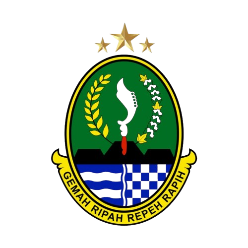
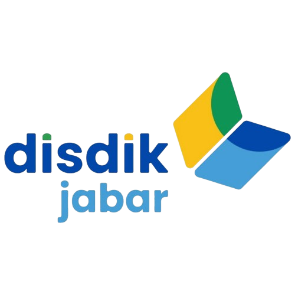
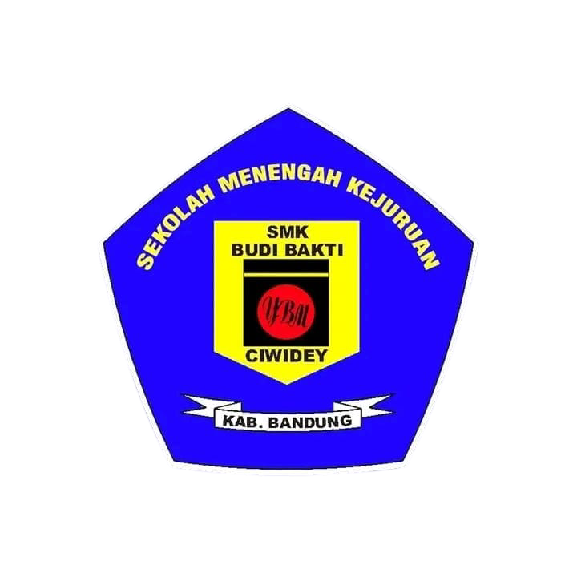
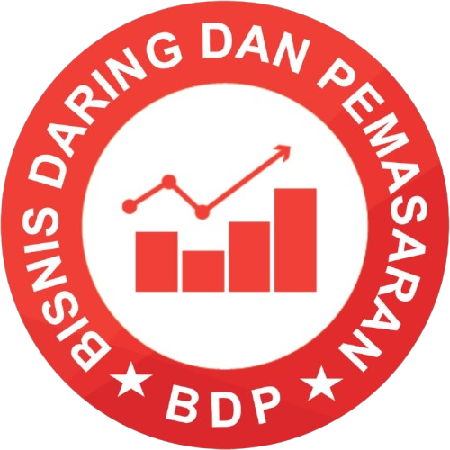
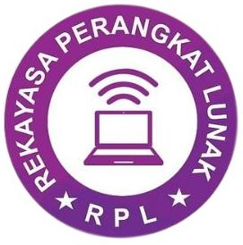
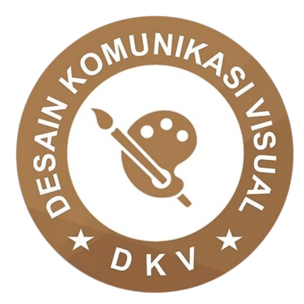
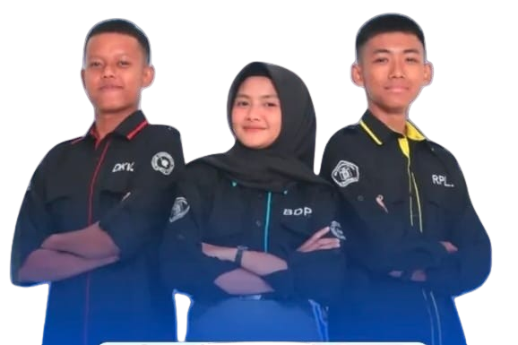
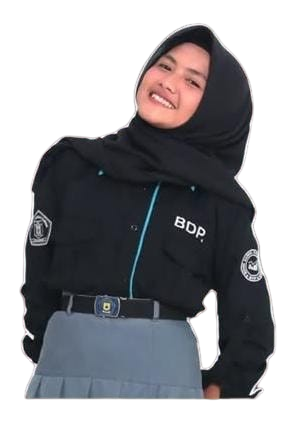
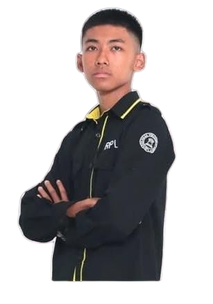
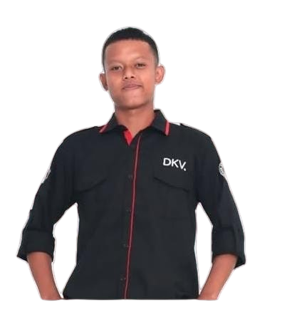

“Berkarakter, Berprestasi Cerdas.”

Menjadi pusat pendidikan untuk menghasilkan tenaga kerja menengah yang terampil, berlandaskan IMTAQ dan IPTEK, serta siap menghadapi era globalisasi.
• Menjadikan sekolah pilihan utama bagi Dunia Usaha dan Industri (DUDI).
• Menyelenggarakan pendidikan yang efektif, efisien, dan fleksibel.
• Mencetak tenaga kerja profesional di bidang teknologi sesuai kebutuhan industri.

Di jurusan BRP, siswa mempelajari pengelolaan toko, strategi pemasaran ritel, visual merchandising, manajemen persediaan, pelayanan pelanggan, promosi penjualan, serta pengelolaan bisnis melalui platform e-commerce.

Di jurusan PPLG, siswa belajar dasar pemrograman, membuat website dan aplikasi, mengelola basis data, memahami analisis sistem, mengembangkan aplikasi mobile, mempelajari jaringan dasar, serta menggunakan alat pengembangan seperti GIT.

Di jurusan DKV, siswa belajar membuat desain grafis, ilustrasi digital, tipografi, fotografi, videografi, mengolah konten kreatif, membangun identitas visual, serta menggunakan berbagai software professional untuk produksi desain dan media.